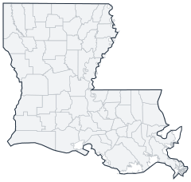

Historical county changes, 1790–1990 › Louisiana

| Name↕ | Unit↕ | Existed↕ | FIPS↕ |
|---|---|---|---|
| Acadia Parish | parish | 1890–1990 | 22001 |
| Allen Parish | parish | 1920–1990 | 22003 |
| Ascension Parish | parish | 1810–1990 | 22005 |
| Assumption Parish | parish | 1810–1990 | 22007 |
| Avoyelles Parish | parish | 1810–1990 | 22009 |
| Beauregard Parish | parish | 1920–1990 | 22011 |
| Bienville Parish | parish | 1850–1990 | 22013 |
| Bossier Parish | parish | 1850–1990 | 22015 |
| Caddo Parish | parish | 1840–1990 | 22017 |
| Calcasieu Parish | parish | 1840–1990 | 22019 |
| Caldwell Parish | parish | 1840–1990 | 22021 |
| Cameron Parish | parish | 1870–1990 | 22023 |
| Catahoula Parish | parish | 1810–1990 | 22025 |
| Claiborne Parish | parish | 1830–1990 | 22027 |
| Concordia Parish | parish | 1810–1990 | 22029 |
| De Soto Parish | parish | 1850–1990 | 22031 |
| East Baton Rouge Parish | parish | 1820–1990 | 22033 |
| East Carroll Parish | parish | 1840–1990 | 22035 |
| East Feliciana Parish | parish | 1820–1990 | 22037 |
| Evangeline Parish | parish | 1920–1990 | 22039 |
| Franklin Parish | parish | 1850–1990 | 22041 |
| Grant Parish | parish | 1870–1990 | 22043 |
| Iberia Parish | parish | 1870–1990 | 22045 |
| Iberville Parish | parish | 1810–1990 | 22047 |
| Jackson Parish | parish | 1850–1990 | 22049 |
| Jefferson Parish | parish | 1830–1990 | 22051 |
| Jefferson Davis Parish | parish | 1920–1990 | 22053 |
| La Salle Parish | parish | 1910–1990 | 22059 |
| Lafayette Parish | parish | 1830–1990 | 22055 |
| Lafourche Parish | parish | 1810–1990 | 22057 |
| Lincoln Parish | parish | 1880–1990 | 22061 |
| Livingston Parish | parish | 1840–1990 | 22063 |
| Madison Parish | parish | 1840–1990 | 22065 |
| Morehouse Parish | parish | 1850–1990 | 22067 |
| Natchitoches Parish | parish | 1810–1990 | 22069 |
| Orleans Parish | parish | 1810–1990 | 22071 |
| Ouachita Parish | parish | 1810–1990 | 22073 |
| Plaquemines Parish | parish | 1810–1990 | 22075 |
| Pointe Coupee Parish | parish | 1810–1990 | 22077 |
| Rapides Parish | parish | 1810–1990 | 22079 |
| Red River Parish | parish | 1880–1990 | 22081 |
| Richland Parish | parish | 1870–1990 | 22083 |
| Sabine Parish | parish | 1850–1990 | 22085 |
| St. Bernard Parish | parish | 1810–1990 | 22087 |
| St. Charles Parish | parish | 1810–1990 | 22089 |
| St. Helena Parish | parish | 1820–1990 | 22091 |
| St. James Parish | parish | 1810–1990 | 22093 |
| St. John the Baptist Parish | parish | 1810–1990 | 22095 |
| St. Landry Parish | parish | 1810–1990 | 22097 |
| St. Martin Parish | parish | 1810–1990 | 22099 |
| St. Mary Parish | parish | 1830–1990 | 22101 |
| St. Tammany Parish | parish | 1820–1990 | 22103 |
| Tangipahoa Parish | parish | 1870–1990 | 22105 |
| Tensas Parish | parish | 1850–1990 | 22107 |
| Terrebonne Parish | parish | 1830–1990 | 22109 |
| Union Parish | parish | 1840–1990 | 22111 |
| Vermilion Parish | parish | 1850–1990 | 22113 |
| Vernon Parish | parish | 1880–1990 | 22115 |
| Washington Parish | parish | 1820–1990 | 22117 |
| Webster Parish | parish | 1880–1990 | 22119 |
| West Baton Rouge Parish | parish | 1810–1990 | 22121 |
| West Carroll Parish | parish | 1880–1990 | 22123 |
| West Feliciana Parish | parish | 1830–1990 | 22125 |
| Winn Parish | parish | 1860–1990 | 22127 |
Note: Decimals in FIPS codes come from Forstall, who gives every county a code, including counties that no longer exist. A county abolished between 1930 and 1990 keeps the code it had. However, a county which was abolished prior to 1930 never received a code. Such a county is given the code of the county which precedes it alphabetically plus a decimal to hold its place in the list.
Source: Richard L. Forstall (1996), Population of States and Counties of the United States: 1790 to 1990, U.S. Bureau of the Census (public domain). Always check a row against the scan it links to.